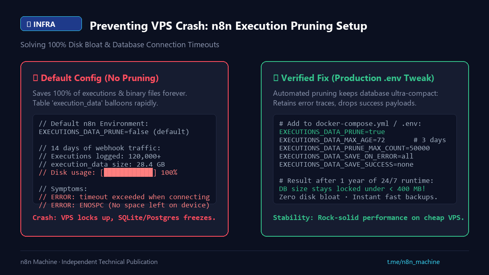

Digest
Preventing VPS Disk Crashes with n8n Auto-Pruning
- Published
- Checked against
- docs.n8n.io
- Status
- Corrected, revision 2

Execution history grows without limit unless you cap it.
01Symptom and cause
- n8n fails with
ENOSPCor timeouts and the disk is full. - By default every execution is kept; the
execution_datatable can pass 20 GB.
02Fix: add to .env or compose
EXECUTIONS_DATA_PRUNE=trueEXECUTIONS_DATA_MAX_AGE=72(hours)EXECUTIONS_DATA_PRUNE_MAX_COUNT=50000EXECUTIONS_DATA_SAVE_ON_SUCCESS=noneto skip successful runs
Sourcen8n Scaling Docs